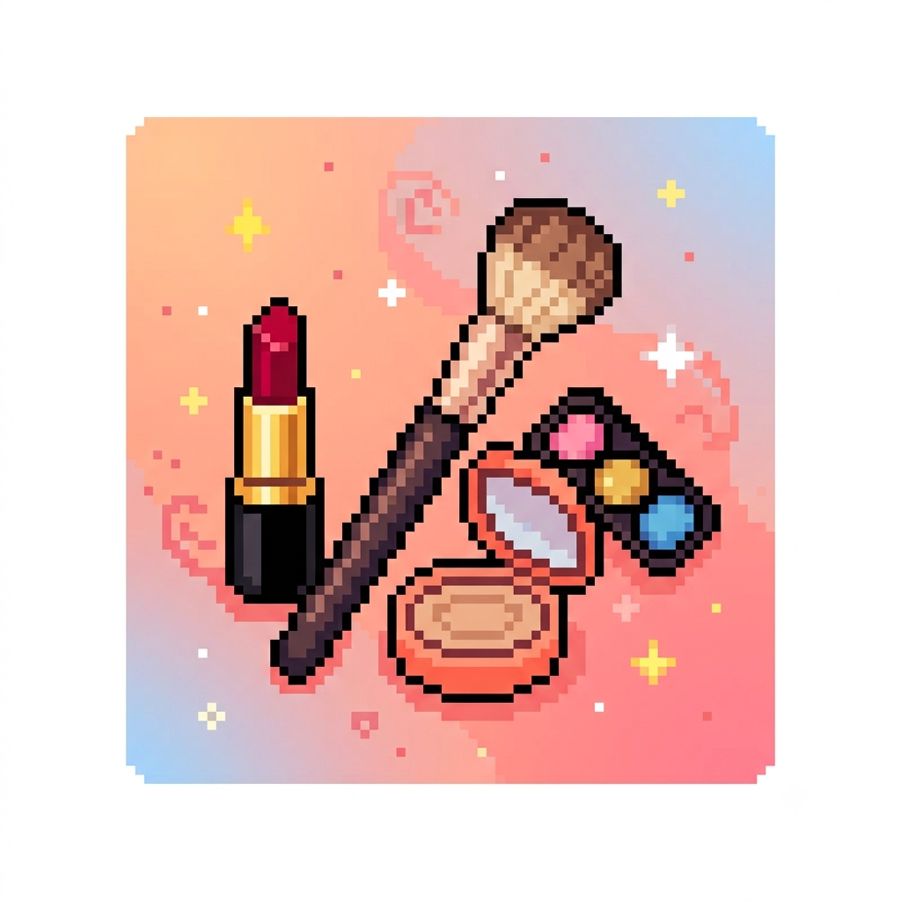

Meu primeiro post
Por: Isabelly
Sejam bem vindos45 ao meu novo blog! Aqui eu irei falar dicas sobre maquiagem e algumas curiosidades.
Vou falar um pouco sobre maquiagens e algumas dicas

Por: Isabelly
Sejam bem vindos45 ao meu novo blog! Aqui eu irei falar dicas sobre maquiagem e algumas curiosidades.